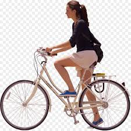

Bicycling is a way for people to get outside and get moving after a day of being indoors at work or school. As a hobby, it promotes good health and physical fitness. In addition, bicycling is relatively inexpensive when compared to other activities. To get the most enjoyment out of bicycling, it helps to start out correctly as a beginner. This means learning the basics about bicycling and bike care, which will build confidence while riding and help prevent injury to oneself and others.
